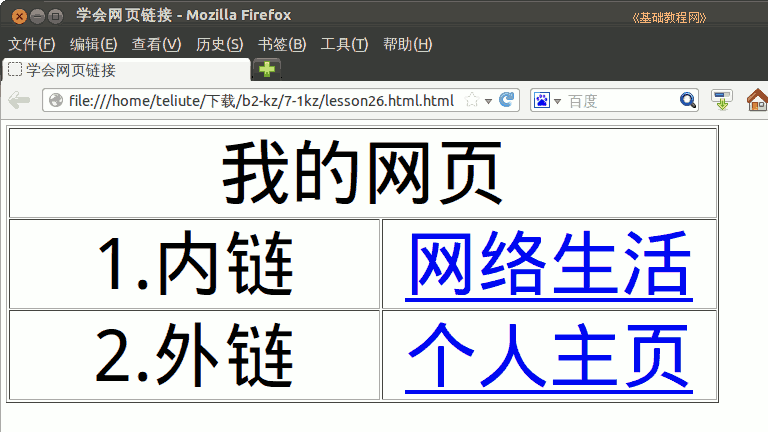

2012-2013 第二学期七年级文字处理和网页教学设计
作者：TeliuTe 来源：基础教程网
二十六、学会网页链接 返回目录 下一课
（一）教学设计
1、学习目标：学会网页链接
2、注意事项：绕过弯来，既不要跳也不要落，一楼过了二楼
3、教学过程：
1）教师准备学案和板书；
2）学生整队进入，开机抄黑板上笔记；
3）教师讲解板书演示操作；
4）学生打指法、日志、完成操作；
5）教师打勾记录学生指法成绩，检查日志和操作；
注：学生抄完笔记就开始打指法、日志，老师讲完后再继续完成；
（二）板书设计(学生笔记)
第26课 学会网页链接
1.连接自己的网页叫内链，网上的叫外链
2.内链的网页也叫相对地址
3.运行KZ，设置UTF-8,保存LESSON26
4.插入网格，插入链接，文本浏览，lesson25
5.校园网，找到个人网页，右键，复制链接地址
6.插入链接，文本，粘贴
--
操作指南：3×2表格，标题“我的网页”，第一行“内链 网络生活”，第二行“外链 个人主页”
操作图示：

（三）课后记 2013-06-07 18:26
--
这节本来都占了，结果说抽考要了一个班的课来考试
去年是书上大概选了两道题，今年问了下直接用课堂
--
还是平常一样，只是老师不讲解和演示，都自己做就是了
学生一下没绕过弯来，不明白该怎么做，平时都依赖惯了
--
点了下，跟前面一样，还是学习链接的知识
前面是链接到图片，链接到音乐，这一节是链接到网页上
--
很快学生都绕出来了，看一眼别人做的效果，马上自己也明白了
后面还剩下时间可以自己练一练，开开网络自己上网
--
看来平时灌输的还是太多一点， 这样可以保证学生都可以做出来
实际好学生自己可以琢磨出来，老师稍稍一点就会了
--
把操作的方法和格式理解了，也就是理解了链接的含义和操作步骤
不管是链接到图片、音乐，还是链接到网页都可以绕过弯
--
学生对这些名词还是有些发怵，一说链接、内链、外链的就绕糊涂
做的时候按照步骤也是个好习惯，卡住的时候要想办法
返回目录 下一课
本教程由86团学校TeliuTe制作|著作权所有
基础教程网：http://teliute.org/
美丽的校园……
转载和引用本站内容，请保留作者和本站链接。